01The concept
An acid line lives from its filter. Over a whole track the cutoff opens in the build, snaps shut at the break, the resonance leans in for the drop. Doing that with automation lanes means drawing five curves for every track and redrawing them when the arrangement changes. TT-KNOBMOVER turns it around: you describe the arrangement, and the curves follow.
The plug-in is a MIDI effect. It sits in front of a TT-303 on the same track, passes your notes through unchanged and adds MIDI CC messages for the five knobs the TT-303 understands:
CC 74 CUTOFF CC 71 RESONANCE CC 73 ENV MOD CC 75 DECAY CC 16 ACCENT (CC 7 VOLUME, optional)The track is a list of sections. Every section has its own start and end value for every knob and a movement (a swing on the cutoff, a wobble on the others). A class (DRIVER, MELODIC, SCREAM, LOW) sets the suggested ranges and defaults. Untouched sections follow those ranges; once you edit a section, its lanes can use the full 0–100 % range. The green sweet-spot band and thin limit lines remain visible as guides. The section tables and limits are the ones of the TT-303 pattern generator, which makes the plug-in a good partner for generated patterns, but it works with any MIDI that plays the TT-303.
transport position → arrangement (sections) → line + swing + wobble → class range (untouched) or 0–100 % (edited)
→ INTENSITY / SMOOTH → MIDI CC on the chosen channel (only when a value changes)
your notes ─────────────────────────────────────────────────────────→ passed through02Quick start
- On the track that plays your acid line, insert
TT-KNOBMOVERbefore the TT-303, so the MIDI passes KNOBMOVER first. Notes from a MIDI item or a keyboard go straight through. The TT-303 must be in HOST mode (it plays the notes it receives) and listen on the channel set under MIDI CH (default 1) – its knobs then follow the CC messages. - Open the preset bar in the header and pick a starting point, for example Driver Single Drop 48 (48 bars: tease, roll, build, pre-drop, drop, fill, reset). Or keep the default, which is the 32-bar arrangement of Driver 32 Bars. To compare presets without sending anything, use PREVIEW in the title bar of the ride map first (see Preset preview).
- Start playback from the beginning of your track. The ride map moves a white playhead across the lanes; the five knobs show the values being sent, and the TT-303 knobs turn with them.
- Click a section in the ride map (or in any lane) to select it. The knob panel shows its FROM and TO values; drag the sliders, or drag the dots in the lanes, to change how the section moves.
- Pull the arrangement into shape: drag section edges to move a boundary by whole bars, use SPLIT, + ADD and DELETE, or set the total length with LEN in the top row. Already marked the parts of the song with regions in REAPER? Import them as sections.
- Bend a line with your own points (double-click it), or press RANDOM for a new take on the section (Own points, RANDOM & import).
- Grab a knob during playback to take over that one value (see Live override); right-click it to hand it back to the ride.
- Save your own arrangement with SAVE in the preset bar.
03The front: RACK+
The front is drawn on a 900 × 910 grid (1125 × 1138 pixels at the default UI size of 125 %). All settings live on it; there is nothing hidden behind sliders. Five tabs in the header switch between views of the same arrangement: RACK+ (described here), MAP, DESK, PADS and TRACKER (see More views). The header, the top row and the OUTPUT panel are the same in every view; the chosen view is saved with the plug-in.
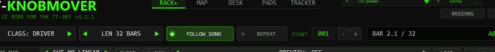
Top row
| Control | What it does |
|---|---|
| CLASS | DRIVER, MELODIC, SCREAM or LOW. Sets the guide ranges and default values of sections you have not edited (see Classes). |
| LEN | Total length in bars: 8, 16, 24, 32, 48, 64, 96, 128, 192 or 256. The last section grows or shrinks. If the length sits between two list entries, the box shows the next higher one and the left arrow goes to the next lower one. |
| FOLLOW SONG | On: the arrangement runs along the project timeline from START. Off: the selected section loops on its own, which is the quickest way to audition one section. |
| REPEAT | On: after the last bar the arrangement starts over. Off: the last values are held. |
| START | The project bar where the arrangement begins (1 = project start). - and + or the mouse wheel change it. Before the start bar the plug-in sends the first values. |
| Display | Current position as BAR b.beat / total and the section it is in. Short messages (copied, no room, panic sent) appear here too. |
Ride map
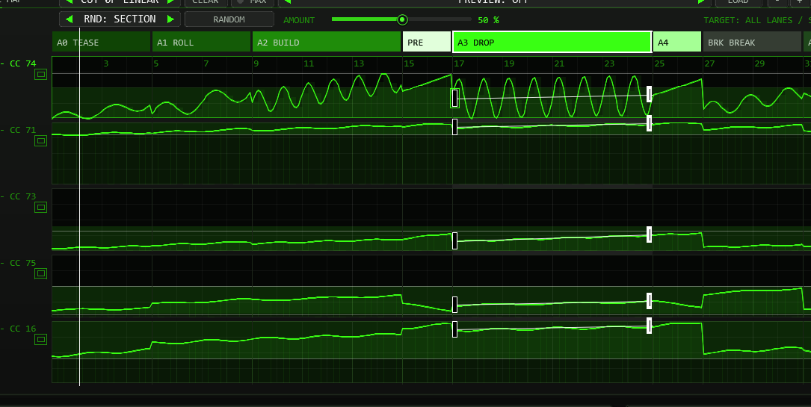
- Section band. One block per section, coloured by type and labelled with its code and name when there is room. Click a block to select it. Drag the edge between two blocks to move the boundary by whole bars; the two sections share their bars, the total stays the same.
- Lanes. From top: CUT (CC 74), RES (71), ENV (73), DEC (75), ACC (16). The left label shows the CC number and the value being sent right now. The green band is the sweet spot, the thin lines are the class limits, the bright curve is the ride (INTENSITY and RIDE included). A click in a lane selects the section too.
- Dots and line. The selected section shows a hollow handle (FROM, start of the ramp) and a solid handle (TO, end) in every lane. Both are narrow, tall half-rectangles inside their own section (FROM right of the bar line, TO left of it), so the handles of neighbouring sections never overlap; they move up and down only. Drag a handle up or down to change that value, drag the line between them to move both together; Shift = fine steps. The value is shown next to the pointer while you drag. Double-click a line to add an own point and bend it (see Own points).
- Lane bar sits left of PREVIEW: the focus lane, number of own points, connection mode, CLEAR and MAX. RANDOM has its own second row with scope, button, AMOUNT slider and TARGET readout (see Own points, RANDOM & import).
- Playhead. The white line follows the song position (with FOLLOW SONG off, the loop inside the selected section).
- Zoom and preview sit in the title bar of the map: -, + and FIT, and the PREVIEW box with LOAD (see Zoom & keyboard and Preset preview).
Lane height and MAX
The lane window is taller at the same UI size: the MAP panel is 732 design pixels high (previously 522, over 40 % more), and the RACK+ ride-map panel is 436 pixels (previously 226). The extra space goes to the lanes; the controls below move down.
For detailed editing, click MAX, press M, or click the small maximize symbol beside a lane name. That lane fills the map height. Buttons at the left choose another lane; click the lit button, MAX or M again to restore all lanes. MAP includes VOLUME; in RACK+ choose one of the five visible CC lanes.
The pointer crosshair shows the bar position, percentage and MIDI CC value (0–127). Horizontal value lines, a soft fill under the curve, bar numbers and bar lines help place points; the time grid gets finer as you zoom in. Use Shift while dragging for fine values and free point timing. FIT fits the song horizontally; AUTO FIT in OPTIONS fits the whole front to the host window.
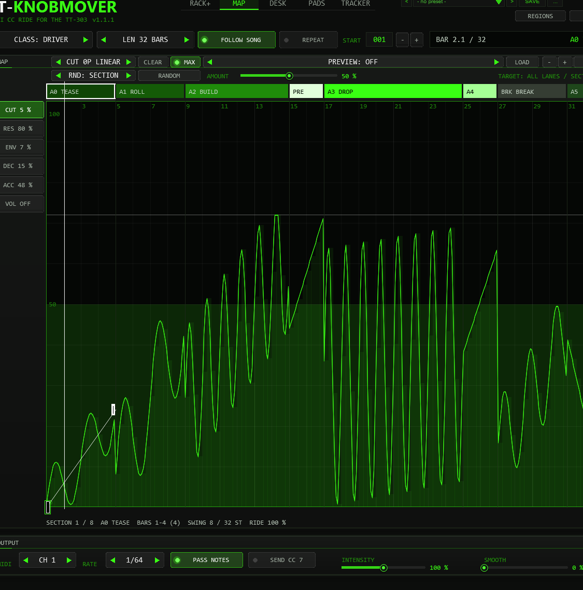
Section knobs
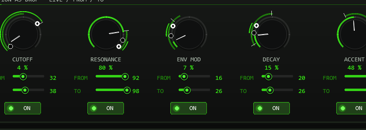
- Live knob. Turns with the ride. Drag it to take over (override).
- FROM / TO (v0.3.0; called START / END before). The value the ramp of the knob has at the beginning and at the end of the section; the line between them is what the section does, and the swing rides on top of it. The two ring dots of the knob show what the section really reaches: the hollow dot is the lowest and the solid dot the highest value (ramp plus swing, within 0–100 % for an edited section), the bright arc between them is the range. The sliders cover 0–100 %; class limits are visual guides. Double-click or Ctrl+click puts back the value from the class table. A FILL section (A4) starts where the previous section ended until you touch one of its values.
- ON. Switches the lane for this section. Off: no CC for this knob while the section plays; the TT-303 keeps its last value. Shift+click switches the lane in all sections.
Movement
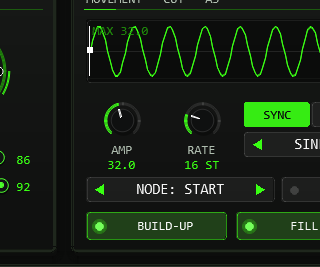
Every lane from cutoff to accent has its own LFO: a wave that rides on top of the line from FROM to TO. The panel shows it over the whole section (scaled to its deepest node); the orange marks are the nodes with their depth. A node is the start of the section, one of the lane's own points, or the end. Each node has its own AMP and RATE; between two nodes both change smoothly (the phase never jumps), so one section can start slow and shallow and end fast and deep, or change speed at every point you placed.
| Control | Range | What it does |
|---|---|---|
| AMP | 0–72 | Depth of the LFO around the line, in percent of the knob range, for the chosen node. 0 is a straight line. Right-click = default (class table for the cutoff, a gentle value for the other lanes). |
| RATE | SYNC 1–64 steps / HZ 0.05–20 | Speed of the LFO for the chosen node. In SYNC it is the length of one cycle in 16th steps (16 steps = one bar in 4/4) and follows the tempo; in HZ it is cycles per second (free, with the project tempo only used to convert). |
| SYNC / HZ | switch | Unit of RATE for this lane in this section. Switching keeps the speed (at the current tempo). |
| SHAPE | SINE, TRIANGLE, SAW UP, SQUARE, SAW DOWN | Waveform of this lane's LFO. SAW UP rises and jumps back at the end of every cycle; SAW DOWN is its mirror image: it falls and jumps up. |
| NODE | START, POINT 1…16, END | Which node AMP and RATE edit. You can also click a handle or an own point in the map, or a mark in the LFO picture. A new point starts with the depth and speed the LFO has at that place. |
| ALL | switch | On: AMP and RATE change every node of the lane in the section at once. |
| RIDE | 0–200 % | How strongly the four lanes besides the cutoff wobble in this section (DESK, PADS and TRACKER; it scales their AMP). 100 % is the default, 0 makes them straight lines. |
| BUILD-UP BEFORE DROP | switch | On an A3 DROP: puts a 2-bar PRE-DROP in front of it, or removes it. The bars come from the section before. The switch lights when a PRE-DROP is there. |
| FILL ON A4 | switch | On an A3 DROP: ends it with a 2-bar A4 FILL that continues from the last values, or removes it. The bars come from the drop. |
Section tools and output
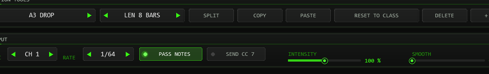
04More views: MAP, DESK, PADS, TRACKER
All views edit the same arrangement and send the same CC; a preset sounds the same whichever view is open. Pick the view that suits the job.
MAP
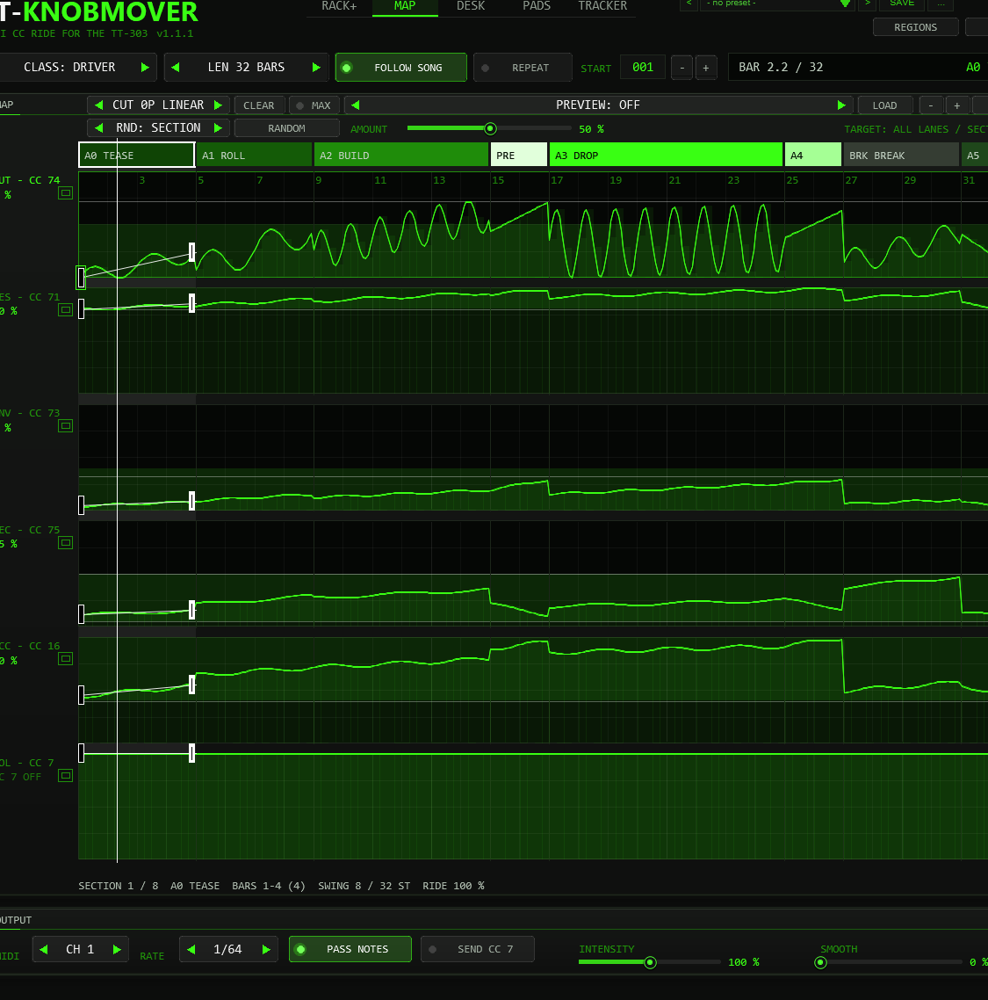
The map of RACK+ in large, with all six lanes. Everything works as in the ride map (select, drag edges, drag dots and lines, zoom, preview). The volume lane can be shaped here like any other lane; it is sent when SEND CC 7 is on. The line under the map lists the selected section in numbers.
DESK
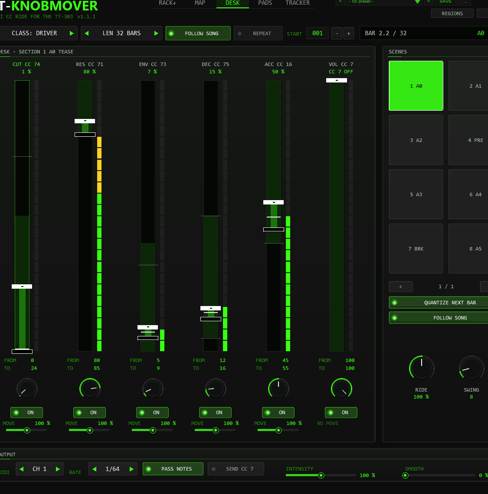
- Range bar. The tall bar shows 0 to 100 % of the knob with the sweet spot (green) and the class limits (white ticks). The hollow handle is FROM, the solid handle is TO of the selected section: drag them (Shift = fine). The white line is the value being sent.
- Meter. The last CC value sent on the lane (0 to 127).
- Live knob and ON work as in RACK+ (override; lane on or off in the section, Shift+click = all sections).
- MOVE. The small slider at the foot of each strip (cutoff, resonance, env mod, decay, accent) sets how strongly that lane swings or wobbles around its FROM / TO line, in every section of the song: 100 % as set, 0 % a straight line, 200 % double. Right-click or double-click puts back 100 %. The ramp itself (FROM / TO) does not change; volume has no swing and no MOVE.
- Scenes. Eight pads per page select a section, with QUANTIZE NEXT BAR at the next bar while playing (an orange bar marks the waiting pad). Turn FOLLOW SONG off and the chosen section loops: the pads switch scenes live. RIDE and SWING belong to the selected section.
PADS
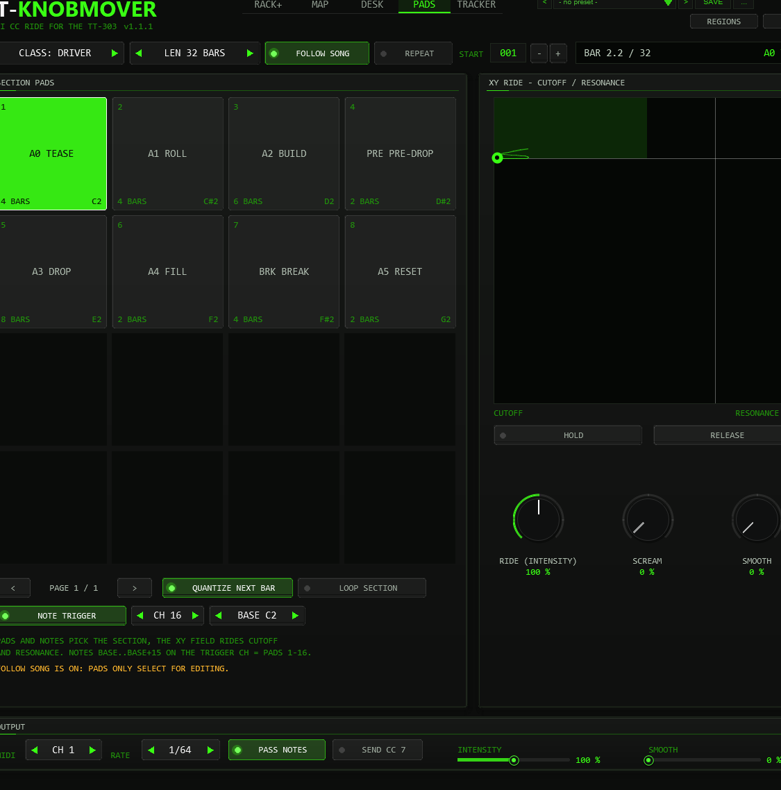
- Pads. Sixteen sections per page as big pads. A click selects the section, with QUANTIZE at the next bar. LOOP SECTION is FOLLOW SONG off: the selected section loops and the pads become a live scene switcher. With FOLLOW SONG on the pads only select for editing.
- XY field. Cutoff left to right, resonance bottom to top, with the sweet spot (green box), the class limits and a trail of the last moments. Drag inside it to ride both knobs by hand (a live override); let go and the ride takes over again. HOLD keeps the values after you let go, RELEASE frees every override.
- RIDE (INTENSITY) and SMOOTH are the same controls as in the OUTPUT panel, big for performing.
- SCREAM (between RIDE and SMOOTH) pushes resonance up and env mod down towards the values of the SCREAM class drop (resonance about 96 %, env mod about 5 %): 0 % off, 100 % all the way. Untouched sections keep the class limits (LOW resonance stops at 70 %); edited sections can reach the SCREAM target across 0–100 %. A hand override (XY field, live knobs) wins.
- NOTE TRIGGER plays the pads from MIDI: with it on, the notes from BASE to BASE + 15 on the trigger channel (CH) select sections 1 to 16, exactly like a click on the pad (QUANTIZE applies). These notes are not passed on to the TT-303; every other note passes as before. Defaults: off, channel 16, base C2 (note 36; REAPER names middle C as C4). Keep the trigger channel apart from the bass notes. With NOTE TRIGGER on, pads 1 to 16 show their note. A trigger note takes effect from the next audio block at the earliest; with QUANTIZE at the next bar after the note.
TRACKER
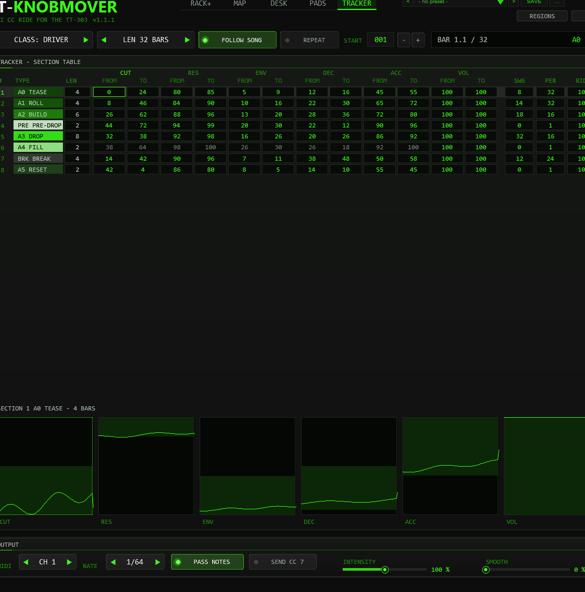
- One row per section: number (
>= playing now), TYPE, LEN, FROM and TO of all six knobs, SWG (swing depth), PER (period) and RIDE. - Change a value: drag it up or down (Shift = fine) or use the mouse wheel; double-click or right-click puts back the class table value. Double-click TYPE for the next type (Shift for the previous); a new type loads that type’s class values, like RESET TO CLASS.
- Grey numbers: the lane is off in that section. Dim numbers: a FILL section that still follows the section before. A small square in the corner of a TO cell marks a lane that has own points in that section.
- The wheel over the number column or the scroll bar scrolls the table (20 rows are visible, up to 64 sections). Below the table, six small graphs show how each knob moves through the selected section.
05Zoom & keyboard
Zoom and scroll (RACK+ and MAP)
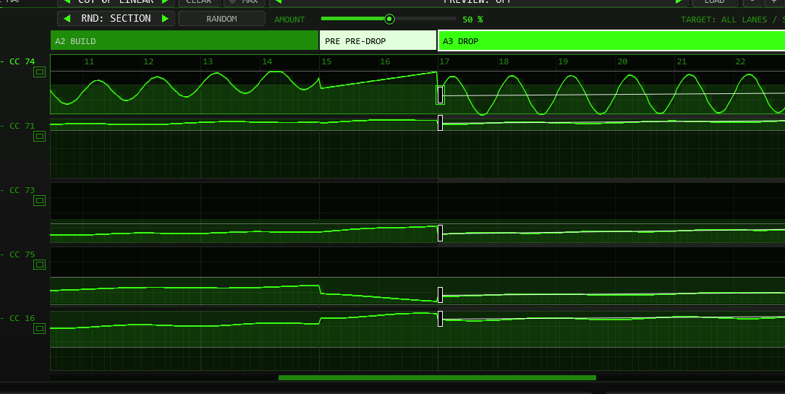
- + and - in the title bar zoom in and out around the middle; Ctrl + mouse wheel over the map zooms around the pointer. At most two bars fill the map.
- While zoomed, the mouse wheel scrolls along the song, and a scroll bar appears under the lanes (drag it or click beside the handle).
- FIT (lit while zoomed) shows the whole arrangement again.
Keyboard
With the plug-in window focused (and no text field or list open):
| Key | What it does |
|---|---|
| Left / Right | Select the previous / next section (the zoomed map follows). |
| Alt + Left / Right | Make the selected section one bar shorter / longer (the next section gives or takes the bar). |
| Home / End | First / last section. |
| [ and ] | Previous / next lane. The chosen lane is green in the map, the desk and the tracker; a click into a lane chooses it too. |
| Up / Down | TO value of the chosen lane in the selected section +1 / -1 (in TRACKER: the focused cell). Alt = the other end (FROM). |
| Page Up / Page Down | The same in steps of 10. |
| O | Switch the chosen lane on or off in the selected section. |
| Delete | Delete the selected section. |
| M | Maximize the focus lane in RACK+ or MAP, or restore all lanes. |
| R | RANDOM: the same as the button (range and amount as set). |
| + / - / F | Zoom in, zoom out, whole arrangement. |
Editing values can use 0–100 %; every change is one undo step. The space bar always starts and stops the transport, also while the plug-in window has the focus.
06Sections, lanes & classes
Section types
| Code | Name | Role in the arrangement |
|---|---|---|
| A0 | TEASE | The quiet start: filter nearly closed, little resonance push, soft accents. |
| A1 | ROLL | The line gets going; cutoff starts to open. |
| A2 | BUILD | Tension: cutoff climbs, resonance and accents rise. |
| PRE | PRE-DROP | The last bars before a drop: cutoff and resonance at their peak, decay short. |
| A3 | DROP | The main section: cutoff holds mid-range and swings wide, resonance high, accents hard. |
| A4 | FILL | A short push after the drop. It starts at the last values of the section before and moves on from there. |
| BRK | BREAK | The breather: cutoff back low, decay long. |
| A5 | RESET | The outro: cutoff and accents fall back, resonance relaxes. |
Changing a section’s TYPE loads the values of that type from the class table. The colours of the band follow the colour scheme of the plug-in (OPTIONS).
Classes and limits
These class ranges govern untouched sections and guide RANDOM. Editing a section unlocks 0–100 % for every lane in that section, including swing and wobble; the class lines and sweet-spot band stay visible. RESET TO CLASS restores the table values and class-range behaviour.
| Class | Cutoff | Resonance | Env mod | Decay | Accent | Typical use |
|---|---|---|---|---|---|---|
| DRIVER | 0–72 | 80–100 | 0–32 | 5–50 | 40–100 | The default for driving acid lines. |
| MELODIC | 0–72 | 80–100 | 0–24 | 5–50 | 40–100 | Lines with a melody: less env mod so the notes keep their shape. |
| SCREAM | 0–72 | 85–100 | 0–12 | 5–50 | 40–100 | High resonance with little env mod: the line screams instead of snapping. |
| LOW | 0–30 | 45–70 | 0–15 | 5–30 | 35–70 | Bass lines that must stay below the rest. |
All values are the positions of the TT-303 knobs in percent. The green sweet-spot band in the lanes marks where these knobs sound best (cutoff 0–50, resonance 80–100, env mod 0–40, decay 5–50, accent 40–100); the upper cutoff range up to 72 is for tension only.
When you change the class, sections you have not edited load the values of the new class. Sections you have touched keep their values and retain the full 0–100 % range; they are not clamped to the new class limits.
Default values (DRIVER)
Start → end per section, in percent. The cutoff swing is given as depth / period in steps.
| Section | Cutoff | Swing | Resonance | Env mod | Decay | Accent |
|---|---|---|---|---|---|---|
| A0 TEASE | 0 → 24 | 8 / 32 | 80 → 85 | 5 → 9 | 12 → 16 | 45 → 55 |
| A1 ROLL | 8 → 46 | 14 / 32 | 84 → 90 | 10 → 16 | 22 → 30 | 65 → 72 |
| A2 BUILD | 26 → 62 | 18 / 16 | 88 → 96 | 13 → 20 | 28 → 36 | 72 → 80 |
| PRE PRE-DROP | 44 → 72 | 0 | 94 → 99 | 20 → 30 | 22 → 12 | 90 → 96 |
| A3 DROP | 32 → 38 | 32 / 16 | 92 → 98 | 16 → 26 | 20 → 26 | 86 → 92 |
| A4 FILL | starts at the end of the previous section; end = start + 26 (cutoff), + 6 (resonance), + 4 (env mod), − 8 (decay), + 8 (accent), then clamped | |||||
| BRK BREAK | 14 → 42 | 12 / 24 | 90 → 96 | 7 → 11 | 38 → 48 | 50 → 58 |
| A5 RESET | 42 → 4 | 0 | 86 → 80 | 8 → 5 | 14 → 10 | 55 → 45 |
MELODIC, SCREAM and LOW have their own tables with the same structure; load one and look at the START and END sliders to see them.
07Editing the arrangement
| Action | How | Result |
|---|---|---|
| Select a section | Click its block in the band, click inside a lane, a pad (DESK, PADS) or a row (TRACKER), or use Left / Right | The panels below show it. |
| Change a value | FROM / TO sliders, the dots in the map, the handles in DESK, a cell in TRACKER, or Up / Down | Uses the full 0–100 % range; marks the section as edited. Class limits remain visible as guides. |
| Move a boundary | Drag the edge between two blocks in the band | Whole bars, both sections keep at least one bar. |
| Change a length | LEN box under SECTION TOOLS | The next section gives or takes the bars; for the last section the total changes (up to 256 bars). |
| Change the type | TYPE box (the mouse wheel is switched off here on purpose) | Loads the class values of the new type. Length stays. |
| SPLIT | Selected section with at least 2 bars | Two halves with the same values. |
| + ADD | Adds a 4-bar ROLL behind the selected section | The new section is selected. Refused when 256 bars or 64 sections are reached. |
| DELETE | Removes the selected section | Its bars go to the section before (to the next one for the first section). The last remaining section cannot be deleted. |
| COPY / PASTE | Copy the values of a section, paste them into another | Type, values and movement are copied; the length of the target stays. |
| RESET TO CLASS | Selected section | Throws away your edits and loads the class table again. |
| BUILD-UP / FILL | Switches in MOVEMENT (A3 only) | Insert or remove the PRE-DROP in front of, or the FILL behind, a drop. |
| Bend a line | Double-click it in the map (own points) | Adds a point you can drag; right-click deletes it. |
| RANDOM | Button or key R | New values that fit the section type and class (see RANDOM). |
| Import regions | REGIONS button or the Action | Takes the sections from the regions / markers of the project. |
Every edit is one undo step in REAPER (Edit → Undo). The arrangement is saved with the project.
08Own points, RANDOM & import
Own points in the lanes
Until 0.8.0 every knob drew a straight line from FROM to TO in each section (plus swing and wobble). Now you can bend that line: place your own points in a lane and the line runs FROM → point 1 → point 2 … → TO. That gives a filter that holds back and then opens late, dips and comes back, climbs in steps, or pumps the resonance – anything a hand-drawn automation curve could do, but tied to the section so it moves with the arrangement.
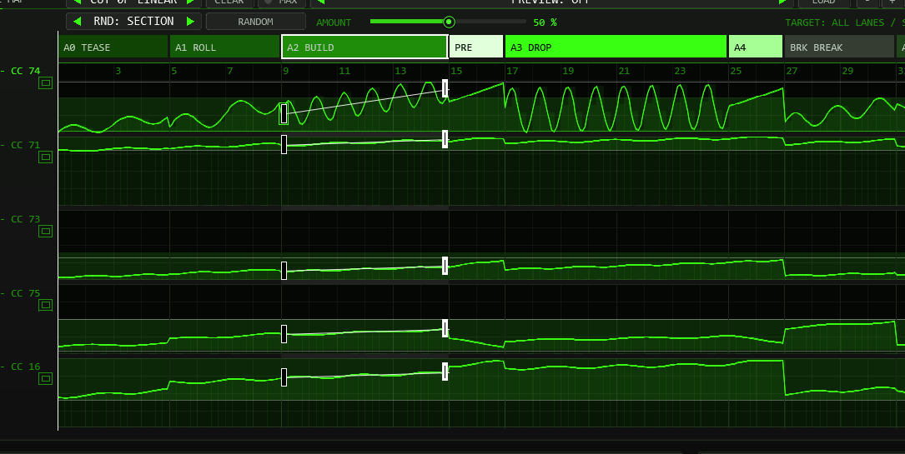
- Add a point: double-click on the line of a section, or anywhere in its lane. The point lands on a quarter-bar grid at the height of the pointer (hold Shift for a free position) and sticks to the pointer: keep the button down to place it exactly.
- Move a point: drag it. It cannot pass its neighbours, stays between FROM and TO in time and inside 0–100 % in value; Shift = free position and fine steps in value.
- Delete a point: right-click it or Alt+click it. CLEAR in the lane bar removes all points of the focus lane in the selected section (Shift+click: in all sections).
- Lane bar: the box shows the focus lane (green in the map; [ and ] or a click in a lane change it), the number of own points and how they are joined: LINEAR = straight segments, SMOOTH = a soft curve (cosine), STEPS = every value is held until the next point (the last step ends at TO).
- Up to 16 points per lane and section. Points are positions inside the section (0 to 100 % of its length), so they stretch when you change the length or move an edge. They are saved with the project, in user presets and in the preset preview, and the small dots of other sections show where they are.
- Swing and wobble ride on top. For an exact curve set SWING to 0 (cutoff) or RIDE / MOVE to 0 (other lanes). The ring dots on the knobs include the points.
- SPLIT and COPY / PASTE copy the points with the section, RESET TO CLASS and a new TYPE remove them, a class change keeps them (they are values, like FROM and TO).
RANDOM
RANDOM rolls a new take that still sounds like the section it is in, instead of throwing numbers anywhere:
- FROM and TO of every lane land around the class table values for the section type, up to 45 % of the class range away at full amount. A type with a clear direction keeps it (a BUILD still climbs, a RESET still falls); ROLL, BUILD and BREAK join the end of the previous section half of the time.
- The cutoff swing gets a new shape (all five), a depth around the table value and a period from a musical list (2, 3, 4, 6, 8, 12, 16, 24 or 32 steps); RIDE changes by up to 60 % of the amount.
- Sometimes own points appear (cutoff more often than the other lanes), joined linearly, smoothly or in steps.
- The LFO of every lane is rolled too: with growing probability a lane gets its own LFO with a shape, SYNC or HZ, and its own AMP and RATE at the start, at every point and at the end, so the speed and depth of the ride change from point to point.
- Everything stays inside the class limits. The volume lane and the ON switches are never touched. Ctrl+Z undoes a roll; every press is one undo step.
The separate RANDOM row contains the scope selector, RANDOM button, AMOUNT slider and TARGET readout:
| Scope | What changes |
|---|---|
| SECTION | All five movement lanes in the selected section. |
| LANE | The focus lane across all sections. |
| ALL | The whole arrangement. |
| BLOCK | Only the focus lane in the selected section, for example just its Env Mod. The LFO of that lane is rolled with it (the cutoff also its swing shape, depth and period). |
AMOUNT is 0–100 %, default 50; drag the slider or use the wheel over the AMOUNT area in steps of 5. At 0 nothing changes. TARGET names the affected lane and section before you roll. Press R to use the same scope and amount. RANDOM is switched off while a preset preview is shown.
Import regions and markers from REAPER
If you have already marked the parts of your song with regions (or markers) in REAPER, you can take them over as the sections of the arrangement. A JSFX cannot read project markers, so two small ReaScripts do the reading; they come with the plug-in (REAPER Action list: TT-KNOBMOVER: import regions (or markers) as sections and TT-KNOBMOVER: import service).
- One-off action: run TT-KNOBMOVER: import regions (or markers) as sections from the Action list (give it a shortcut or a toolbar button). It reads the project and sends the sections to the TT-KNOBMOVER on the first selected track (otherwise the first one in the project). The plug-in shows IMPORTED n SECTIONS in its display.
- REGIONS button: start TT-KNOBMOVER: import service once per REAPER session (it keeps running in the background). Then the REGIONS button in the header of the plug-in does the import for that very instance – without the service the button only reminds you of the action.
| Project | Becomes |
|---|---|
| Regions (or, if there are none, markers) | One section each, in time order. With markers a section runs from one marker to the next; the last one to a marker named end (or the end of the project). |
| Position and length | Rounded to whole bars (bar length from the time signature at the first region). START is set to the bar of the first region. A gap between two regions is closed by the section before it; an overlap is cut at the next start; anything shorter than a bar gets one bar. |
| Name | The type is guessed from the words of the name: intro, tease, start = TEASE; verse, groove, loop = ROLL; build, riser, rise = BUILD; pre, pre-drop = PRE-DROP; drop, chorus, hook = DROP; fill = FILL; break, breakdown, bridge = BREAK; outro, end, fade, reset = RESET. You can also use the codes A0 … A5, BRK, PRE. Without a match: ROLL. Change a type afterwards in the TYPE box. |
| Time selection | If one is set, only regions / markers inside it are imported. |
| Limits | 64 sections and 256 bars; what does not fit is cut off. |
The import replaces the arrangement (values from the class tables, FOLLOW SONG on, selection on the first section) and is one undo step (Ctrl+Z in REAPER). Loading a project never imports anything by itself. The plug-in counts bars with one time signature; tempo changes inside the song are fine, a time-signature change shifts the boundaries (see Limits).
09Live override
Each of the five big knobs can be taken over while the song plays. Drag a knob (up raises, Shift for fine steps, the mouse wheel works too) and that lane sends your value instead of the ride, over the full 0–100 % range. The label shows OVR and the value in white.
- Release: right-click, double-click or Ctrl+click the knob. The lane returns to the ride at once.
- An override holds until you release it, across sections. It is not saved with the project or with presets.
- Smoothing still applies, so the knob does not jump.
- The XY field in PADS sets an override for cutoff and resonance while you drag and releases it when you let go (unless HOLD is on).
10Output & timing
| Control | What it does |
|---|---|
| MIDI CH | Channel 1–16 for the CC messages. Changing it re-sends every lane on the new channel at once. |
| RATE | How often a lane is looked at: 1/32, 1/64 (default), 1/128 or 1/256 note. A message is only sent when the 0–127 value actually changed, so a slow ride sends far fewer messages than the grid suggests. |
| PASS NOTES | On: incoming notes pass through unchanged. Off: notes are dropped (a note that is already sounding is still released properly). All other MIDI always passes. |
| SEND CC 7 | Also sends the volume lane as CC 7. It is a flat 100 % line until you shape it in MAP, DESK or TRACKER; flat, it is handy to put the TT-303 volume to a known value. |
| INTENSITY | 0–200 %. Scales every movement: the cutoff swing and the wobble of the other lanes. 100 % is as set, 0 gives straight lines. |
| SMOOTH | 0–100 %. Rounds off jumps between values with a slew of up to 8 steps. 0 is off. |
| PANIC | Sends All Notes Off (CC 123) on all 16 channels, forgets the notes it is holding and re-sends every lane. |
When values are sent
- While playing on the grid set by RATE, anchored at the start of the arrangement.
- At the start of playback immediately, for every lane, even when you start between two grid points. A note on the first beat therefore never plays with an old filter.
- While stopped whenever the cursor moves or you change something (section values, class, INTENSITY, SEND CC 7 and so on): the TT-303 follows the cursor, which is handy for auditioning a position.
- After a jump (loop, cursor) smoothing starts fresh so the value does not glide across the jump.
The CC messages are mixed into the MIDI stream in time order. When a CC and a note fall on the same sample, the CC goes first.
11Presets
The preset bar sits in the header, left of OPTIONS. 64 factory presets are built in, plus 32 slots for your own.
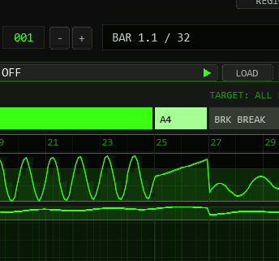
| Arrangement | Bars | Sections | Character |
|---|---|---|---|
| 32 Bars (four classes) | 32 | 8 | The standard club arrangement: tease, roll, build, pre-drop, drop, fill, break, reset. |
| 16 Bars / 64 Bars (Driver) | 16 / 64 | 8 / 12 | A short version and a long one with a second drop. |
| Loop 8 | 8 | 5 | Roll, build, pre-drop, drop, fill. REPEAT is on: a loop for jamming. |
| Tease Intro 24 | 24 | 5 | A lead-in that ends at the first short drop. |
| Fill Storm 32 | 32 | 11 | Short drops, each followed by a fill. |
| Single Drop 48 | 48 | 7 | One long build and one drop, then reset. |
| Slow Burn 64 | 64 | 6 | Sixteen bars of tease, sixteen of roll, a 20-bar build and a short drop at the end. Smoothing at 20 %. |
| Break Heavy 64 | 64 | 15 | Three drops separated by long breaks. |
| Double Drop 96 | 96 | 13 | Two 16-bar drops with a break and a second build between them. |
| Extended 128 | 128 | 18 | Three drops, the way a long DJ mix is built. |
| Epic 192 | 192 | 18 | 16-bar intro stages, three drops of 16 to 24 bars, a long reset. |
| Marathon 256 | 256 | 24 | The longest arrangement the plug-in holds: four drops, one of 32 bars. |
Except for the first six, every arrangement is available in all four classes (the name starts with the class). Presets set the class, the arrangement and a few output values (intensity, smoothing, rate, repeat). The intensity starts at 100 % for DRIVER and MELODIC, 120 % for SCREAM and 80 % for LOW; these are starting points, change them to taste.
Movement styles (new in 0.9.0)
Until 0.8.0 every factory preset moved the cutoff the same way: a sine swing around the straight line. Now each section of a preset has its own variant: a different swing shape, depth and period and, where it helps, own points that bend the line. A variant is described relative to the class table and the class range, so it fits all four classes and follows a class change (as long as you have not edited the section). Inside a preset the variants rotate, so the second drop does not repeat the first. A style decides which variants a preset uses:
| Style | Character |
|---|---|
| Tri | Triangle sweeps: even up-and-down filter movement, fast flutter in the pre-drops and fills. |
| Saw | Sawtooth ramps in both directions: rising sweeps that jump back, falling sweeps that jump up (SAW DOWN), saw risers in the fills. |
| Steps | Staircases and gates: stepped builds, square-wave cuts, a ladder in the drops, gate flutter in the fills. |
| Morph | Slow, soft movement: long periods, late rises, double humps, dips in the breaks; a little smoothing. |
| Mix | Every section different: sine, triangle, saw and square in turn, stairs and curves. Good for long arrangements. |
| Wub | Hard waves for the drops: falling saws, square cuts, resonance pumping and accent ratchets; intensity +10 %. |
The style shows in the name only for the extra presets (Steps 32, Saw 32, Tri 64, Wub 48, each in all four classes); the others use the style that suits their arrangement. RESET TO CLASS brings a section back to the plain sine movement of the class table.
Finding a preset
| Looking for… | Try |
|---|---|
| A loop to jam over | Loop 8; Fill Storm 32; Driver 16 Bars |
| The standard club arrangement | 32 Bars (four classes), and the Steps 32 / Saw 32 variants of it |
| One big drop | Single Drop 48; Wub 48 for the hard version; Tease Intro 24 for a lead-in |
| Long tracks with several drops | Double Drop 96, Extended 128, Epic 192, Marathon 256; Tri 64 |
| Slow, atmospheric movement | Slow Burn 64; Break Heavy 64; the Morph style |
| Basslines that stay low | All presets starting with Low (untouched class LOW sections: cutoff limited to 30 %) |
| High resonance, screaming lines | All presets starting with Scream |
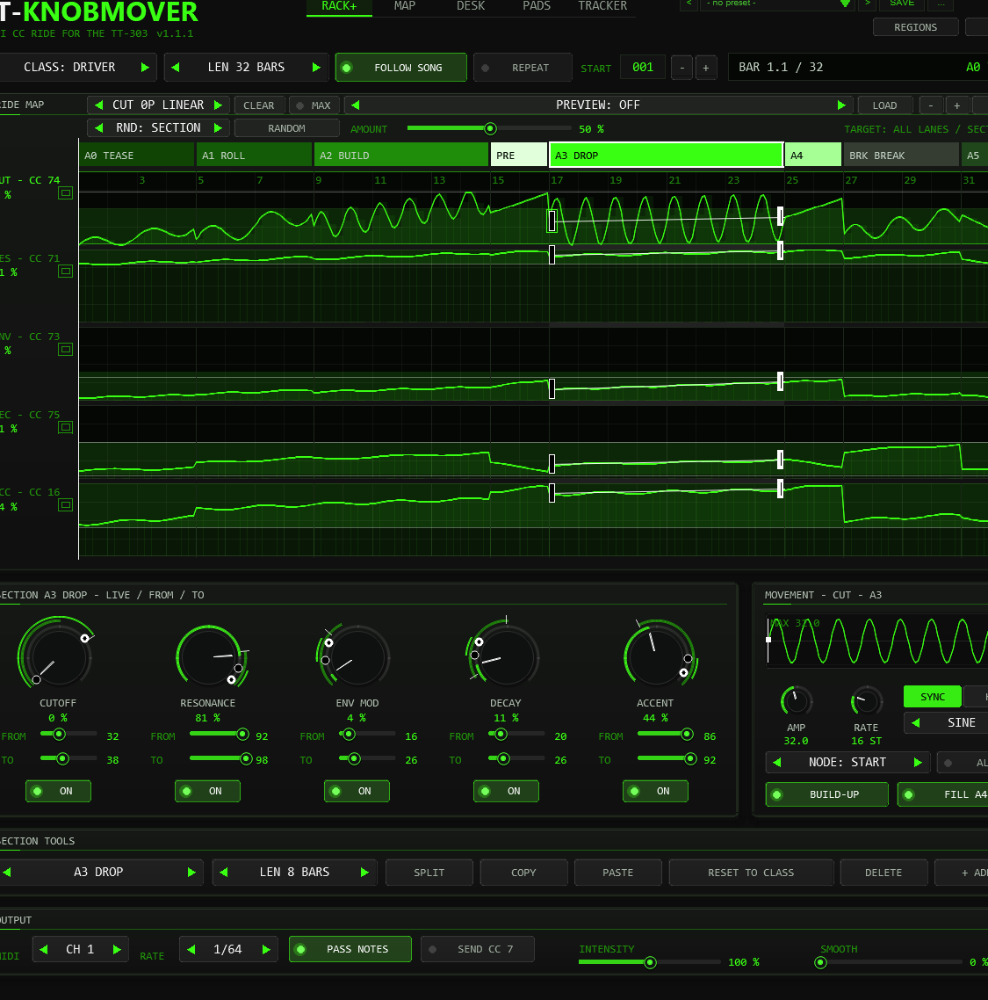
Preset preview
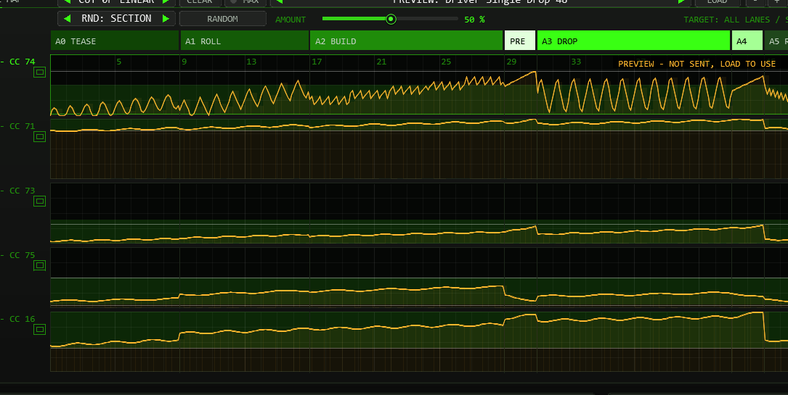
The PREVIEW box in the title bar of the map (RACK+ and MAP) shows any factory preset in the map without loading it: your arrangement and the CC output stay as they are, nothing reaches the TT-303. Click the middle of the box to open a list of all presets and pick one (click beside the list to close it). The arrows or the mouse wheel step through the presets, and a right-click on the box jumps back to PREVIEW: OFF. The display in the top row says PREVIEW ONLY. LOAD takes the previewed preset over (one undo step), PREVIEW: OFF returns to your arrangement. Editing in the map is paused while a preview is shown; zoom and scroll still work.
Your own presets
- SAVE stores the current state in a user slot and asks for a name. ... offers rename, copy and delete.
- A preset stores: class, the whole arrangement (all sections with all values and own points), REPEAT, START BAR, RATE, SEND CC 7, INTENSITY, SMOOTH, MOVE and SCREAM. It does not store FOLLOW SONG, MIDI CH, PASS NOTES, the colour scheme or live overrides, so loading a preset never changes your routing.
- An asterisk behind the name shows that the state differs from the loaded preset.
- The user bank lives in the plug-in state: it is saved with the project, travels with FX chains and track templates, and is part of every native REAPER FX preset file.
12How the values are made
For readers who want to know exactly what is sent. Time is counted in 16th steps from the start of the arrangement (16 steps = 1 bar in 4/4; the bar length follows the time signature of the project).
t = position inside the section, 0 at its first step, 1 at its end
line = START + (END - START) * t (no own points)
line = polyline START -> P1 -> ... -> END over t (own points: LINEAR; SMOOTH eases each segment with
0.5 - 0.5*cos(pi*f); STEPS holds the last point's value until the next)
CUTOFF : value = line + SWING * INTENSITY * MOVE[CUT] * wave( steps_in_section / PERIOD )
others : value = line + amp * RIDE * INTENSITY * MOVE[lane] * sin( 2*pi * steps / period + CC )
VOLUME : value = line (no swing or wobble)
lane amp period (steps)
RESONANCE 1.5 40
ENV MOD 1.0 31
DECAY 1.5 53
ACCENT 2.0 37
SCREAM : RES / ENV move towards the SCREAM DROP table midpoint, scaled by SCREAM
value = clamp(value, 0, 100) if section edited, else clamp(value, class min, class max)
smooth : v += (value - v) * (1 - exp(-dt / (SMOOTH * 0.08 steps))) (SMOOTH 0 = off)
CC = round( v * 127 / 100 )INTENSITY, RIDE, MOVE and SCREAM are factors in these formulas (100 % = 1). SCREAM is applied before the range limit; a live override replaces the computed lane value. The wobble phase is the CC number in radians, so the four lanes never wobble in step. wave is a sine, a triangle, a rising saw, a square wave
or a falling saw that starts at zero (SQUARE starts high) and has the period given by PERIOD. Own points replace the line; swing and wobble work on top. The result stays within 0–100 % in edited sections; untouched sections retain the class limits.
Without movement variants or edits, the default output matches 0.8.0.
With movement variants disabled and sections untouched, the values follow the arrangement generator of the TT-303 pattern tools value for value: the same lines, swing, wobble, limits and rounding. We checked that by comparing every value on a 1/32-note grid for every factory arrangement in all four classes, over up to 256 bars, against the generator. Two things of the generator are not part of the plug-in: the per-piece decay offsets of the generator’s recipes, and the shortening of the wobble period for pieces under about seven bars.
13Limits & notes
- Size: up to 64 sections and 256 bars per arrangement, up to 16 own points per lane and section.
- Time signature: the import from regions also counts bars with one signature (the one at the first region).
- Time signature: a bar is counted with the signature at the start of each audio block. A time-signature change in the middle of the project moves the section boundaries; for a track in one signature nothing changes.
- One instance per synth. Two KNOBMOVERs in front of the same TT-303 would both send CC and fight over the knobs.
- Only the TT-303 knobs listed above are driven. Anything else that listens to CC 74, 71, 73, 75, 16 or 7 on the chosen channel will move as well.
- Editing while playing is safe: the CC engine works on its own copy of the arrangement and only takes over a change once the front has finished writing it (since 0.8.0; before, one audio block could read a half-changed arrangement).
- Pads with QUANTIZE switch at the next bar of the project (counted from START BAR), not at the end of the current section.
- Very high rates at very high tempos can produce more than 1000 CC messages in one block; the surplus is dropped and the next block continues.
- The sliders of the plug-in are hidden on purpose (REAPER would create an undo step every time you open the window with visible sliders); the front offers every function.
14Troubleshooting
| Symptom | Cause and fix |
|---|---|
| The TT-303 knobs do not move | TT-KNOBMOVER must come before the TT-303 in the FX chain of the same track. Check the channel (MIDI CH) and that the transport is running or the cursor is moved. |
| One lane does nothing | Look for a white OVR label on its knob (right-click to release) and for a switched-off ON in the selected section. Shift+click ON switches a lane for all sections. |
| The ride ends too early or repeats | Check the total LEN, START and REPEAT. After the last bar without REPEAT the last values are held. |
| The ride starts at the wrong bar | START is the project bar where the arrangement begins. With FOLLOW SONG off, the selected section loops instead of following the song. |
| Notes are missing | PASS NOTES is off. Switch it on, or leave it off when another track plays the notes. |
| Values seem to jump after a class change | Edited sections keep their values over 0–100 %. Untouched sections reload the class table and its movement variants. RESET TO CLASS loads the new class values for the selected section. |
| A note hangs | Press PANIC. It sends All Notes Off on all channels. |
| REGIONS says RUN ACTION: KNOBMOVER IMPORT | The helper service is not running. Run the action TT-KNOBMOVER: import service once, or use TT-KNOBMOVER: import regions (or markers) as sections from the Action list. |
| The import takes the wrong plug-in or nothing happens | The action works on the TT-KNOBMOVER of the first selected track; select the track first. A project without regions and without markers has nothing to import (a message box says so). |
| I cannot add a point | The lane already has 16 points in that section, or a preset preview is shown (switch it off), or you clicked once only – points need a double-click. |
| RANDOM does nothing | The amount is 0 (use the AMOUNT slider or its mouse wheel), the preview is on, or LANE / BLOCK targets the volume lane (volume is never rolled). |
15Changelog
1.0.0 — Smoothing respects the class limits after a change
One fix: during playback, a class change glided the smoothed output of untouched sections outside the still-valid limits of the new class for a long time (a regression of the 0.9.5 fix). The smoothed value now respects the new limits from the first tick after the change; edited sections and live overrides keep the full 0–100 range. The automated REAPER full test covers this case with its own probe.
0.9.6 — LFO per lane and node, new handles, preset list
The MOVEMENT panel became an LFO panel for the focus lane: AMP (depth), RATE in SYNC (16th steps) or HZ, the waveform and a picture of the LFO over the section. Every lane has its own LFO now, not only the cutoff. Each node of a lane (the start, every own point, the end) carries its own AMP and RATE, and both glide from node to node, so a lane can speed up, slow down and swell inside one section. RANDOM rolls the LFOs as well. PREVIEW opens a list of the factory presets and a right-click returns to OFF. The FROM / TO handles are half-rectangles inside their own section and no longer overlap. Without an own LFO the output is value for value the same as in 0.9.5.
0.9.5 — Full-height DESK, PADS and TRACKER, flat look, wider window
DESK, PADS and TRACKER now use the whole height of the window: the DESK strips and the scene pads are much taller, PADS has big section pads and a larger XY field, and the TRACKER shows 28 rows with tall section previews. Buttons, switches, selectors, tabs and pads have a flat look; the window is 10 % wider, so the lanes get more room, and the LEN selector fits LEN 256 BARS. Sound and CC output are unchanged.
0.9.0 — Own points, RANDOM, region import, new movement styles
22 October update: taller lane windows (MAP over 40 % taller, RACK+ also enlarged), MAX / M and lane selector, pointer crosshair with bar / percent / CC, value grid and zoom-dependent bar grid, full 0–100 % editing with class guides, separate RANDOM row with BLOCK, AMOUNT and TARGET. Controls below the map move down; AUTO FIT and manual UI zoom remain available.
Own points in the lanes: double-click a line to bend it; points are joined linearly, smoothly or in steps (lane bar next to PREVIEW), up to 16 per lane and section, saved with the project and in user presets. New swing shape SAW DOWN. RANDOM (button and key R) rolls new values that fit the section type and class, for the section, a lane or the whole arrangement, with an amount. REGIONS: project regions (or markers) become the sections of the arrangement, through two ReaScripts that come with the plug-in (one-off action and background service). Presets: all factory presets were reworked: each section has its own movement variant (sine, triangle, saw up and down, square, stairs, curves, resonance pumping), 16 new presets (Steps 32, Saw 32, Tri 64, Wub 48 in all four classes), 62 in total. Without own points and with the old sine variants the CC output is value for value the same as in 0.8.0.
Also: a project or preset that is read (load, undo) is now handed to the single writer of the arrangement instead of being written directly (closes the open review finding), a truncated project state falls back to the factory arrangement, a note-on that arrives for a key that is already held while PASS NOTES is off no longer leaves a hanging note on the TT-303, after a stop the start values are sent again even when the cursor returns to the start, choosing a section with FOLLOW SONG off sends its values while stopped, the position display with REPEAT before START BAR shows 0, a truncated project state falls back to the factory arrangement in the chosen class, and the manual describes the first-steps chain (TT-303 in HOST mode, MIDI channel, the OVR label).
0.8.0 — Five views, zoom, keys, preset preview
Five views in one plug-in, chosen by tabs in the header: RACK+ (as before), MAP (large map with all six lanes, including volume), DESK (channel strips with FROM / TO handles, live value and CC meter, eight scene pads), PADS (sixteen section pads, XY field for cutoff and resonance that springs back on release) and TRACKER (every section as a row of numbers). Map zoom and scroll (+ / - / FIT, Ctrl + wheel, wheel, scroll bar) and keyboard editing. Preset preview in the map without loading or sending. Pads switch at the next bar (QUANTIZE NEXT BAR). Edits are handed to the audio thread atomically, so a block can no longer send a half-edited value. UI kit 7. New in DESK: MOVE per lane (0 to 200 %, default 100 %), how strongly the lane swings around its FROM / TO line; saved with the project and in user presets. New in PADS: SCREAM (0 to 100 %, default 0) pushes resonance up and env mod down towards the scream class, inside the class limits; NOTE TRIGGER (default off, channel 16, base C2): notes BASE to BASE + 15 on the trigger channel select sections 1 to 16 like the pads and are not passed on. At the default settings the CC output is the same as before.
0.3.0 — Edit in the lanes, real extremes on the ring
The values of the selected section can be edited directly in the ride map lanes: drag the hollow (FROM) or solid (TO) dot up or down, drag the line between them to move both together, hold Shift for fine steps; the value is shown while dragging, and a FILL section turns into fixed values when edited (as with the sliders). The ring dots of the section knobs now mark the lowest and highest value the section really reaches (ramp plus swing) instead of the ramp ends; the sliders are labelled FROM / TO. The sound is unchanged.
0.2.0 — Presets and long arrangements
46 factory presets (loops of 8 bars up to a 256-bar marathon, each in all four classes). Arrangements up to 256 bars and 64 sections; LEN list 8 to 256. Knob rows in the SECTION and MOVEMENT panels moved down so the sweet-spot arcs no longer cross the panel title. Fixes from an external code review: a MIDI channel change re-sends every lane on the new channel; changes made while stopped (SEND CC 7, START BAR, INTENSITY) take effect at once; playback started between two grid points sends the start values immediately; SMOOTH never leaves the class limits after a class change; a note-off whose note-on was dropped by PASS NOTES is dropped too; the preset modified-star detects more changes; a damaged project state is no longer half-read; the position display follows REPEAT; the LEN box can reach every list entry.
0.1.0 — Initial version
Front with ride map, five live knobs with START/END per section, MOVEMENT, section tools and output; CC engine after the section tables of the TT-303 pattern generator; preset bar with six factory presets; live override per knob.
1.1.0 — Bass patterns
Two short repeating factory rides: Speed Bump Open rises from 15 to 85 percent cutoff over one bar (an exponential curve approximated by three points), then resets. Evolve 4 Bars rises 20 to 70 over three bars and falls to 25 in bar four. ENV MOD accompanies it because TT-303 has no drive CC. These authored curves may exceed the usual class sweetspot limits. The factory bank holds 64 presets.
1.1.1 — Reliability fixes
Withdrawn class changes are cancelled before they can replace the current class. Large audio blocks send every scheduled CC change without truncating the event tail, with MIDI Thru kept in sample order. Hz-mode LFO plots refresh when the tempo changes. The SCREAM tooltip qualifies its class-limit behaviour, and the package includes the missing manual screenshots.
UI Size & Saved Options
Updated in v1.1.1. New instances open at 125% UI size for clearer text. The controls and text are redrawn at the selected size; the colour scheme and background retain their appearance.
Open OPTIONS and choose UI SIZE: 100% / 125% / 150% / 200% / 300%, or click the percentage field and enter a whole number from 25 to 400. Enter or a click outside the field applies it; Escape cancels the edit. Values outside the range are limited to the nearest supported value.
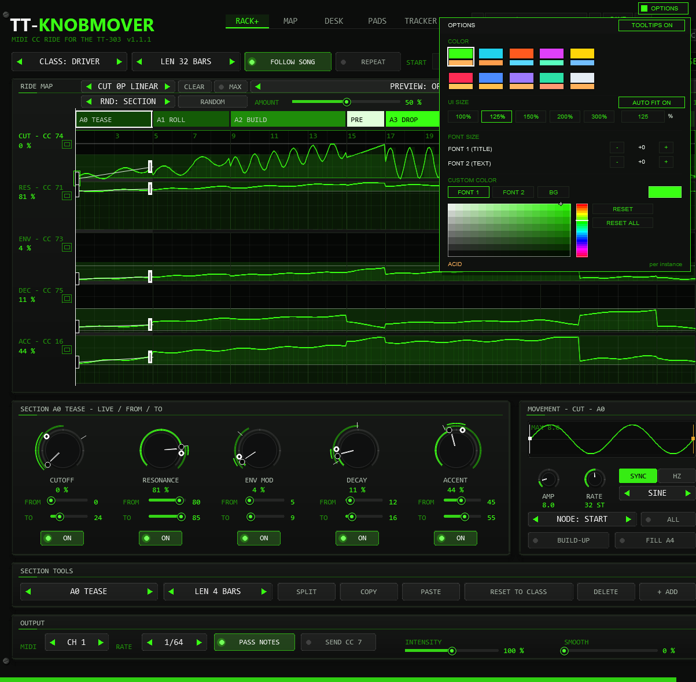
AUTO FIT. When you drag the edge of the FX window, the front rescales to the new window size (the largest whole percentage that shows the whole front, 25 to 400 %) and the scrollbars disappear. The UI SIZE buttons and the percentage field still set a fixed size, which stays until you change the window again. AUTO FIT ON / OFF in the UI SIZE row of OPTIONS switches the rescaling off for this instance; the setting is saved with the project. Switching it on fits the front to the current window at once.
If the enlarged front exceeds the host window, use the horizontal and vertical scrollbars to reach every control. The mouse wheel over a scrollbar moves that view. OPTIONS stays visible at the upper right. You can also enlarge the REAPER FX window to show more of the front.
All OPTIONS settings are saved per instance: UI size, colour scheme, title and text font sizes, custom title/text/background colours, colour-picker target, and TOOLTIPS ON / OFF. Closing and reopening the FX window keeps them; saving and reopening the project restores them. They also travel with FX chains and native REAPER FX presets. Save the project to keep changes between sessions.
The sound presets in the plugin's own preset bar retain the instance's appearance settings. Older projects and style blocks remain readable; projects that predate UI SIZE use the new 125% default.